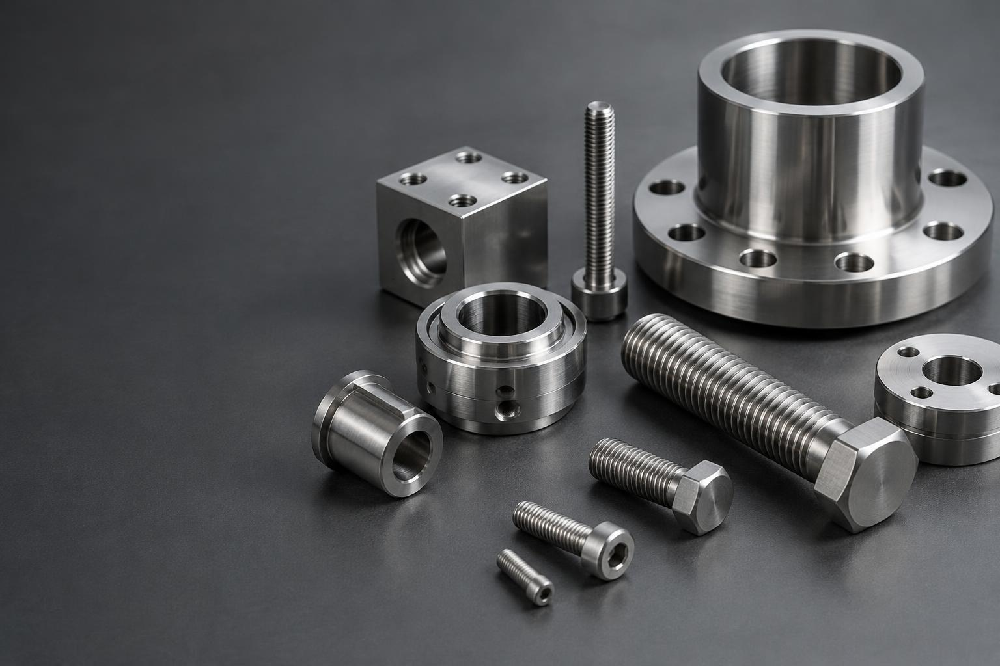

01
Industri
Produkter och förnödenheter för daglig drift, underhåll och produktion.

INDUSTRI · VVS · VERKSTAD
Vi hjälper företag att hitta rätt produkter och förnödenheter – med personlig service, god produktkunskap och långsiktiga relationer.
EN PERSONLIG INKÖPSPARTNER
Bergfelds hjälper företagskunder med produkter och förnödenheter inom framför allt industri, VVS och verkstad. Berätta vad du behöver, så hjälper vi dig vidare.
VÅRA HUVUDOMRÅDEN

Produkter och förnödenheter för daglig drift, underhåll och produktion.

VVS-produkter, förbrukningsmaterial och tillbehör för professionell användning.

Verktyg, skydd, förbrukningsmaterial och utrustning för arbetsdagen.
SÅ ARBETAR VI
Du beskriver behovet. Vi tar oss tid att förstå verksamheten och användningen.
Med produktkunskap och leverantörskontakter hjälper vi dig hitta rätt alternativ.
Vårt mål är en enkel kontakt och en långsiktig affärsrelation.
BERGFELDS I LUDVIKA
Ring, mejla eller besök oss på Gatubacken 9. Besöksadressen bör verifieras före lansering.